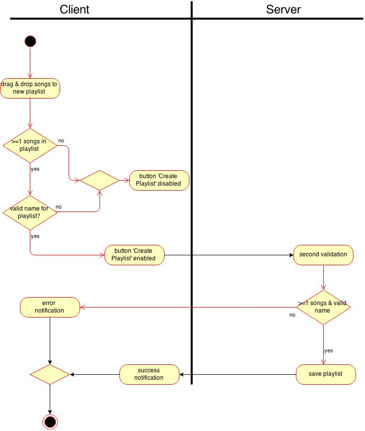

Phillipp Perez and Leo Reschetko
We are students at the DHBW Kalrsruhe and work on the project 'CLOUD' for the course 'Software Engineering'.
| Date | Version | Description | Author |
|---|---|---|---|
| 12.04.2015 | Version 1.0 | Created Use Case | Phillipp Perez |
| 13.04.2015 | Version 1.1 | Added activity diagram | Leo Reschetko, Phillipp Perez |
Playlist
The admin can create playlists selecting songs that have been uploaded to the Raspberry Pi earlier. On the one side will be a list of all available songs and on the other side will be a list containing the songs of the currently created playlist. Songs can be easily added to a playlist using drag and drop. The admin must also enter a name for the playlist. Moreover, it will be possible to update an existing playlist and to delete it completely. An overview about all existing playlists is necessary.
Create a playlist: The admin drag and drops one or more songs from the list of all songs to the other list. Finally, he enters a name for the playlist and clicks on the 'Create Playlist' button.
Update a playlist: The admin selects a playlist in the overview about all existing ones and clicks on the edit icon. The page 'Playlists' will be reloaded with the selected playlist and the accordingly filled out lists. The admin can then drag and drop songs and finally click on 'Update Playlist'.
Delete Playlist: The admin selects a playlist in the overview about all existing ones and clicks on the delete icon.
Link to according .feature file
The admin selects no songs for a new playlist:
The button 'Create Playlist' will be disabled by JavaScript so that no upload is possible. As the user might try to manipulate the JavaScript in order to create also playlists containing no songs, there will exist also a second validation of the playlist on the server side.
not applicable
You need to be logged in as admin in order to create a new playlist and you need to be on the page 'Playlists'.
In order to update or delete a playlist there needs to be stored at minimum one playlist in the database.
The admin can see the newly created playlist in the overview list.
After deleting a playlist, it should be deleted from the database. Furthermore, the playlist should no more be visible in the list showing all created playlists.
Hereby, the following rules are defined: